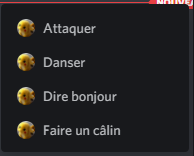

Aide de Zbeub Bot
Zbeub Bot est un bot Discord possédant plusieurs fonctionnalités sympatiques ! Cette aide liste toutes les commandes disponibles utilisables !
Aide
z!help : Affiche la liste des commandes disponibles. La commande slash /help
fonctionne également.
z!about : Affiche des informations à propos du bot (notamment le patch note).
z!changelog : Envoie tout le changelog complet du bot.
z!credits : Affiche les crédits.
z!botusage : Affiche des informations statistiques concernant le fonctionnement du bot.
z!infos : Affiche des informations importantes concernant l'avenir des bots musicaux et de
Zbeub Bot (il y a aussi les commentaires du créateur).
Les commandes présentes sur ce paragraphe sont aussi disponibles en commandes slash.
Installation
Attention : Ces commandes nécessitent la permission Administrateur pour être
utilisables.
z!installslashcommands : Installe les commandes slash et les commandes d'application sur le serveur.
z!deleteslashcommands : Supprime les commandes slash les commandes d'application sur le serveur.
La commande z!deleteslashcommands a été réactivée depuis la version 0.10.0.0 de Zbeub Bot.
Fun et social
Pour utiliser les commandes suivantes vous pouvez @mentionner la personne ou utiliser random à
la fin.
Remarques:
- La commande z!error n'utilise pas d'arguments.
- Toutes les commandes peuvent être utilisées sans argument.
Exemples :
z!hello @DestrClank
z!hello random
Commandes :
z!hello : Dit bonjour à quelqu'un.
z!error : Envoie un message d'erreur fictif.
z!attack : Pikachu fera une attaque Boule Elek à quelqu'un.
z!dance : Pikachu fera une danse à quelqu'un.
z!hug : Pikachu fera un câlin à quelqu'un.
z!chewie : Christina Pikachu Cordon Bleu vous sortira sa meilleure phrase !
z!wala : Vous jurez que ce n'est pas vous ??
z!mtm : Kirby vous transmettra un joli message !
z!zemmour : Ça ne rigole plus là OnO !
z!nice : Nice...
z!bogossitude : La bogossitude à son paroxysme.
Commandes slash
Fonctionnement
Les commandes slash et les commandes d'application doivent être installés via une commande décrite dans le paragraphe Installation pour être utilisables.
Commandes
/sendmessage : Le bot envoie le message saisi par l'utilisateur.
Exemple : /sendmessage texte:Ceci est un test.
/embed : Le bot envoie sous forme d'embed le message saisi par l'utilisateur.
Exemple : /embed description:Ceci est un test titre:Coucou !
Remarque : L'argument "titre" n'est pas nécessaire.
/test : Teste les commandes slash.
/error : Envoie un message d'erreur fictif.
/ping : Fait un ping-pong.
Informations
Fonctionnement
Les commandes suivantes nécessitent de @mentionner la personne pour fonctionner.
Commandes
z!showinfoaboutmember : Affiche des informations à propos d'un membre.
z!membercard : Envoie une carte de profil d'un membre.
Autres
z!ytconvert : Permet de convertir une vidéo YouTube en fichier musique (.mp3).
Attention : La vidéo ne doit pas dépasser 20 minutes de temps. (depuis la version 0.10.0.5)
Exemple : z!ytconvert https://www.youtube.com/watch?v=dQw4w9WgXcQ
Cette commande est désormais disponible également en commande slash depuis la version 0.10.0.0 de Zbeub Bot.
Musique
Fonctionnement
-> Les commandes suivantes peuvent être utilisées soit par commandes dans le chat (avec le préfixe z!) soit
par les commandes slash (avec le préfixe /)
-> Pour utiliser ces commandes, vous devez être dans un salon vocal.
-> Pour écouter de la musique dans un salon de conférence, vous devez utiliser d'abord la commande slash
/play ou choisir un résultat de recherche pour que le bot puisse rejoindre le salon de
conférence. Puis quand le bot est présent dans le salon de conférence les deux commandes
(z!play et /play) peuvent être utilisées.
Commandes
z!play : Joue de la musique via le lien YouTube ou effectue une recherche.
Exemples :
z!play https://www.youtube.com/watch?v=dQw4w9WgXcQ
z!play dylan vassalo spamton neo remix extended
z!skip : Permet de passer la musique.
z!stop : Stoppe la musique.
z!loop : Boucle la musique en cours de lecture.
z!queue : Affiche la liste de lecture.
z!pause : Met en pause la musique.
z!resume : Met en lecture la musique.
z!np : Affiche la musique en cours de lecture.
z!qp : Recherche la musique sur YouTube et lance immédiatement la lecture ou l'ajoute dans la
liste de lecture. La commande fonctionne avec les liens également.
Exemples :
z!qp https://www.youtube.com/watch?v=dQw4w9WgXcQ
z!qp dylan vassalo spamton neo remix extended
Commandes d'application
Les commandes d'application sont des commandes qui sont accessibles via le menu contextuel de Discord.
Le bot possède des commandes d'application pour les membres d'un serveur.
Pour les utiliser, faites un clic droit sur n'importe quel membre sur le côté droit lorsque vous êtes dans un salon textuel.
Puis dans le menu qui apparaît, cliquez sur "Applications".
La liste des commandes vont apparaître.

Remarque : Les commandes d'appliction ne sont pour le moment disponibles que dans la version PC de Discord, elles ne sont pas disponibles sur la version mobile.